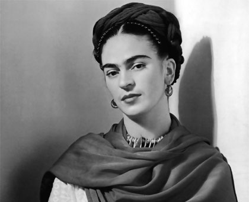

Frida Kahlo, la icónica pintora mexicana del siglo XX, es conocida tanto por su obra artística única como por su vida apasionada y llena de desafíos. Nacida el 6 de julio de 1907 en Coyoacán, México, su vida estuvo marcada por una serie de tragedias y experiencias personales que la convirtieron en una de las figuras más influyentes y emblemáticas del mundo del arte. A lo largo de su carrera, Frida Kahlo creó un legado artístico que trascendió fronteras y continúa inspirando a generaciones de artistas y amantes del arte. Esta es la historia de una mujer extraordinaria cuyo arte y vida se entrelazaron de una manera que desafía las convenciones y que dejó una huella indeleble en la historia del arte.
|  |
Nació el 6 de julio de 1907 en Coyoacán, un barrio de la Ciudad de México, México. Fue una de
las pintoras más influyentes del siglo XX y una figura icónica en la historia del arte. Su vida
estuvo marcada por la tragedia y la lucha, y su obra refleja tanto su sufrimiento personal como
su compromiso con la expresión artística. |
|
La obra de Frida Kahlo se caracteriza por su estilo surrealista y su enfoque en autorretratos,
que a menudo incorporan elementos simbólicos y personales. Sus cuadros exploran temas como la
identidad, el dolor físico y emocional, la sexualidad, la política y la cultura mexicana. Entre
sus obras más conocidas se encuentran "Las dos Fridas", "Autorretrato con collar de espinas y
colibrí", "Autorretrato con mono" y "La columna rota". |